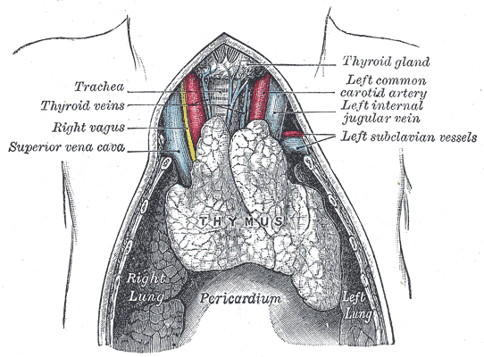

Meta da página + checklist
Piridostigmina e a timectomia
Ao final da página: base sintomática · paralelo central/periférico · quando opera o timo.
Piridostigmina periférica
Tratamento base da MG: piridostigmina com ou sem imunoterapia.
Piridostigmina é um anticolinesterásico periférico: bloqueia a enzima que degrada a ACh na fenda. Bloqueando a acetilcolinesterase → aumenta a ACh na fenda → aumenta a sobrevida da ACh → prolonga o efeito → melhora a transmissão e a força (fecha o "problema de entrega" do modelo didático).
Paralelo rivastigmina
Paralelo com demência: lá também se usa anticolinesterásico, mas de ação central — ex. rivastigmina. Na MG o alvo é periférico (piridostigmina).
| Central (demência) | Periférico (MG) |
|---|---|
| Rivastigmina | Piridostigmina |
| AChE-i no SNC | AChE-i na fenda da placa |
Imunoterapia
Se a base sintomática não bastar: imunoterapia — corticoide, imunobiológico e assim por diante.

Henry Vandyke Carter, in Gray, Anatomy of the Human Body, via Wikimedia Commons. Public domain. Source: commons:Thymus.png

Timoma opera · benefício tardio
A prancha de atlas ancora a topografia: o timo no mediastino anterior, entre pulmões, acima do pericárdio. Timoma opera; sem tumor, a tríade <50/generalizada/AChR+ carrega evidência. Benefício pode demorar anos.
Timoma opera
Com o timo investigado, avaliar timectomia. Timectomia indicada se há timoma (tumor) — opera.
Tríade sem tumor + tempo do benefício
Outra indicação (mesmo com timo normal): tríade < 50 anos + forma generalizada + anti-AChR positivo — há evidência para timectomia.
Racional: na patogênese da MG há papel do timo; após timectomia o paciente melhora, mas a melhora pode demorar muito. A melhora pós-timectomia pode demorar mais de 10 anos.
Em jovem com forma mais grave/generalizada, vale a pena: sobrevida longa + tempo para colher o benefício. Em idoso, o benefício de retirar o timo (sem timoma) é questionável: cirurgia + perda de víscera + sobrevida mais curta pode não dar tempo de colher a melhora.
Checklist de timectomia — quando operar?
- Timoma → opera.
- <50 a + generalizada + AChR+ → evidência (tríade MGTX/PCDT).
- Idoso sem tumor → questionável (sobrevida curta × benefício tardio).
Checklist visual: timoma → opera · <50 + generalizada + AChR+ · idoso sem tumor → questionável + timeline "melhora em anos".
Quiz
Q1. Piridostigmina atua como:
Gabarito: B. Piridostigmina é AChE-i periférico; rivastigmina (demência) é central.
Q2. Timoma em MG:
Gabarito: B. Timoma é indicação direta de timectomia. MuSK+ não puxa timectomia como AChR/timoma.
Q3. Tríade de evidência para timectomia sem tumor:
Gabarito: B. Os três eixos juntos: idade (<50 a), forma, sorologia. MGTX incluiu até 65 a — o corte da tríade permanece <50 a.